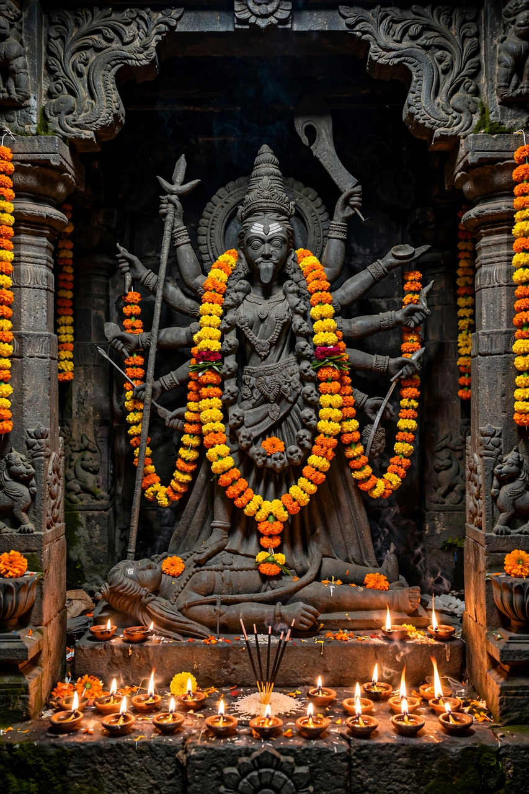

From Wikipedia, the free encyclopedia
| Kali | |
|---|---|
| Affiliation | Hinduism; goddess of time, death, destruction and motherhood |
| Consort | Shiva |
| Symbol | Garland of skulls; skirt of arms; sword and severed head |
| Festivals | Kali Puja |
| Origin | Springs from Durga's forehead (Devi Mahatmyam); independent Mahavidya in Tantric tradition |

Kali (Sanskrit: काली, Kālī, "the Black One", also a feminine form of kāla, time) is a Hindu goddess associated with time, death, destruction, and — paradoxically to outside eyes — fierce motherly love and liberation. Depicted with dark blue or black skin, a garland of human heads, a skirt of severed arms, and a lolling tongue, holding a bloodied sword and a severed head, she is at once the most terrifying and, for her devotees, the most tender form of the Divine Mother. She is the first of the ten Mahavidyas (wisdom goddesses) of Tantra and the presiding deity of Kolkata's great Kalighat temple.
Kali first appears in battle in the Devi Mahatmyam (c. 5th–6th century CE), springing from the furrowed brow of Durga to destroy the demons Chanda and Munda — hence her name Chamunda — and to drink the blood of the demon Raktabija, whose every spilled drop spawned a new copy of himself: Kali lapped up the blood before it fell and devoured the duplicates. In later and Tantric traditions she grows far beyond an emanation of Durga, becoming the supreme reality herself: time that devours all things, the void from which the universe comes and to which it returns.
Every element of Kali's image is read symbolically by her traditions: the skulls are the letters of the Sanskrit alphabet, or the heads of ego; the sword severs delusion; the severed head she holds is the ego offered up; her nakedness is nature stripped of illusion; and her tongue — stuck out, in the beloved Bengali telling, in sudden modesty when she realises she has stepped on her husband Shiva, who had thrown himself beneath her feet to stop her rampage of destruction and bring her back to herself. Her four arms variously hold the sword, the head, and make the gestures of fearlessness (abhaya) and blessing.
Kali is the beloved Mother of Bengal, hymned by the saint Ramakrishna (who served as priest at the Dakshineswar Kali temple) and the poet Ramprasad, whose songs address her with intimate, teasing devotion. Kali Puja, celebrated on the new moon of the autumn festival season (around Diwali), fills the night with lamps, fireworks and offerings. Historically she was also patroness of the Thugs and of dacoits, a connection colonial accounts sensationalised. In Tantric practice she is approached as the power that dissolves fear of death; in modern India she is also invoked as an emblem of female power and righteous rage.
Hinduism · Durga · Shiva · Tantra · Hindu mythology · Krishna